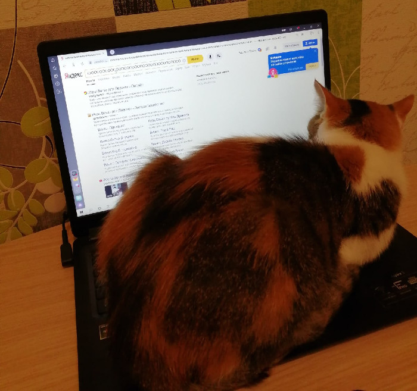

По-моему, вся наша жизнь сейчас связана с компьютером или хотя бы с мобильным телефон. Я больше люблю сидеть в ноутбуке. Это очень удобно, гораздо удобнее, чем планшет или телефон. Хотя, мои сыновья с этим не согласятся, потому что старший сын режется по вечерам в какие-то игры на большом компьютере, а младший любит, затихнув где-то в неприметном уголке квартиры, общаться с одноклассниками по смартфону. Мужу вообще больше планшет нравится, он с ним даже на работу ходит. Так что, каждый в нашей семье выбирает то, что ему по душе.
Наша кошка Милана, похоже, как и я, больше любит ноутбук. Стоит только его включить, Милана тут как тут, ложится прямо поверх клавиатуры и мурчит. Попробуй-ка её сгони с ноутбука, она может и цапнуть, если что.

Больше всего мне нравится плести из бисера цветы. Во-первых, это красиво. Во-вторых, цветы из бисера являются довольно сложными поделками, и мне это нравится. То есть, я нахожусь уже на том уровне мастерства, когда хочется искать что-то позаковыристей, а не попроще. Здесь мне, кстати, интернет и помогает искать схемы плетения очередной моей задумки. Ну, и в-третьих, я вообще очень люблю цветы. У меня их и в квартире полно, и на клумбе во дворе я их высаживаю, а на даче, так там вообще всё в цветах.
Зимой человек особенно остро нуждается в какой-то дополнительной яркости, ведь на улице солнышка не хватает. Вот так я и пытаюсь пополнить недостаток солнечной энергии своими разноцветными бисерными цветочками.
К тому же, моё увлечение приносит мне немалый доход. У меня в сети есть своя группа, я там выкладываю свои «шедевры», люди смотрят, заказывают, покупают. Не поверите, я просто не успеваю выполнять заказы, насколько мои цветы востребованы у населения нашего города.
Милана всегда рядом, она тоже любит бисер. Иногда кошка не прочь затеять игру с маленькими бисеринками, но такие игры я сразу строго пресекаю, а то так никакого бисера не напасёшься, Милана ж разбросает его по всей квартире, если игрой увлечётся.
